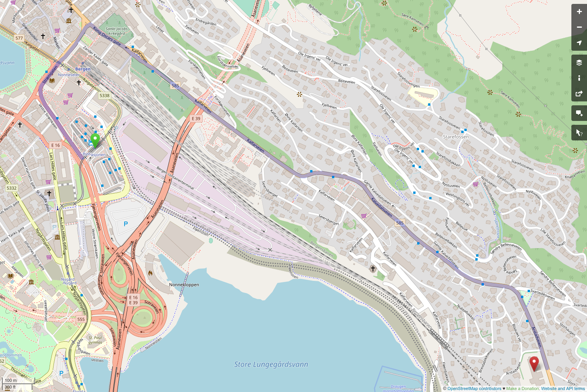

Introduction to reproducibility
Julia Romanowska
2023-10-24
Outline
- Overview of the book
- Structure of the meetings
- What is reproducibility?
- Why do we need reproducibility?
- Project start (based on chapter 3)
Overview of the book
Structure of the meetings
Proposed structure:
- short presentation
- exercises/hands-on/live coding
- discussion
We need your participation!
Before we start…
What is reproducibility?
Sharing:
- analysis steps
- inputs, outputs
- documentation: data + code
- code used to generate each figure
- notes
- versions of software, packages, etc.
Why do we need reproducibility?


Fundamentals
Prerequisites
- R is not RStudio
- text file vs. binary file
- R packages - installation and use
- variables/data in the environment (memory)
- file location, relative and absolute paths
- file extension
Project start
Analysis of data: Housing in Luxembourg
data: prices of housing in Luxembourg,
nominal prices,
per commune,
trapped in Excelwrite scripts:
rescue data from Excel,
convert to real prices,
make some plots/tables
Hands-on
Your project is not done
- How easy would it be for someone else to rerun the analysis?
- How easy would it be to update the analysis once new data gets published?
- How easy would it be to reuse this code for other projects?
- What guarantee do we have that if the scripts get run in 5 years, with the same input data, we get the same output?
Photo by Joshua J. Cotten on Unsplash
Photo by Dewang Gupta on Unsplash